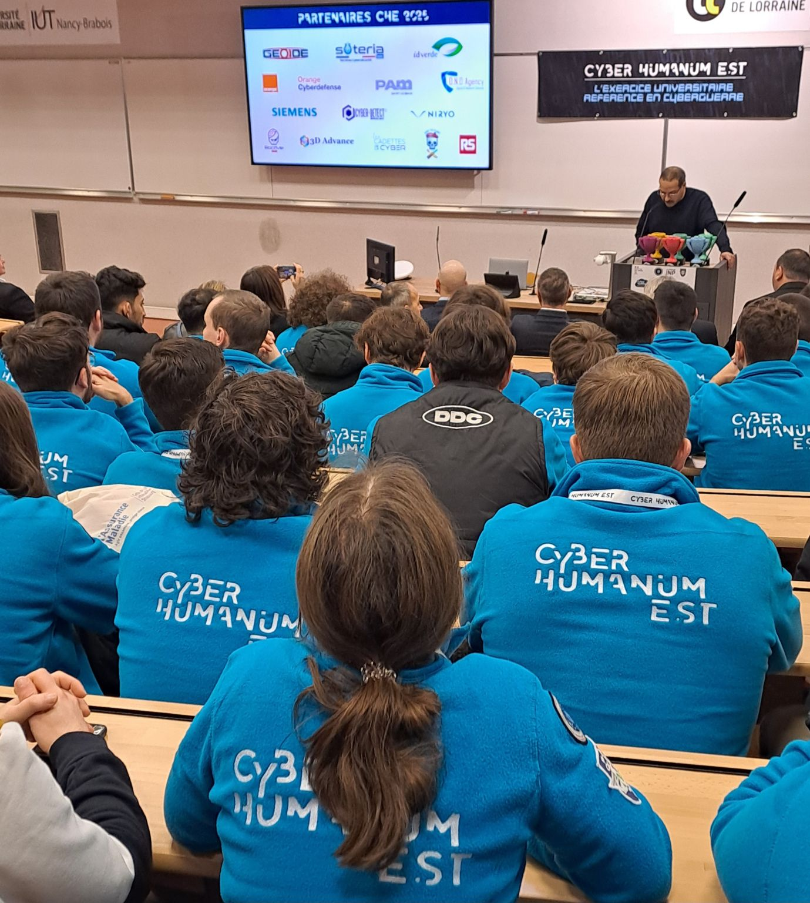
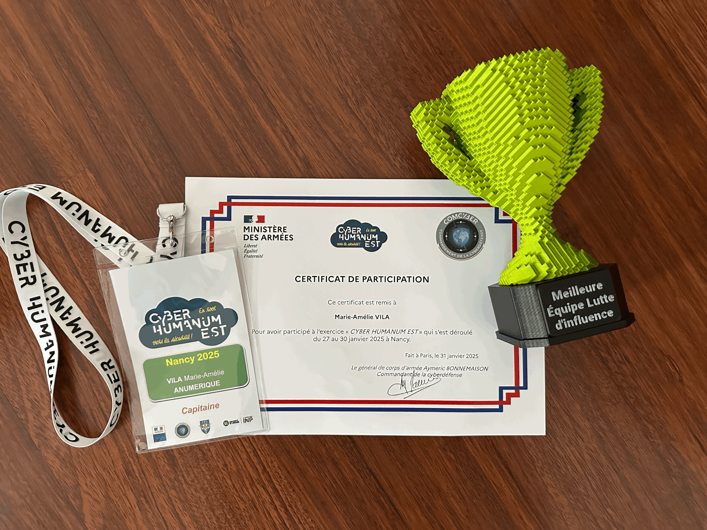

Après le retour d'expérience, tous les participants, organisateurs et partenaires se sont réunis dans une salle de conférence à l'IUT Nancy-Brabois pour la remise des prix.
L'événement a débuté par un discours du directeur, marquant la clôture officielle de cette aventure intense.
Six prix ont été décernés, mettant en avant les meilleures performances dans différentes catégories :
Malgré nos deux victoires, c'est l'équipe Cryptanga qui a été sacrée vainqueur globale du Cyber Humanum Est 2025.
Une légère déception pour nous, mais vite balayée par la fierté d’avoir participé à un événement aussi exceptionnel.
Pour clôturer cette édition, chaque participant a reçu un diplôme officiel ainsi que des goodies offerts par les partenaires du CHE.
